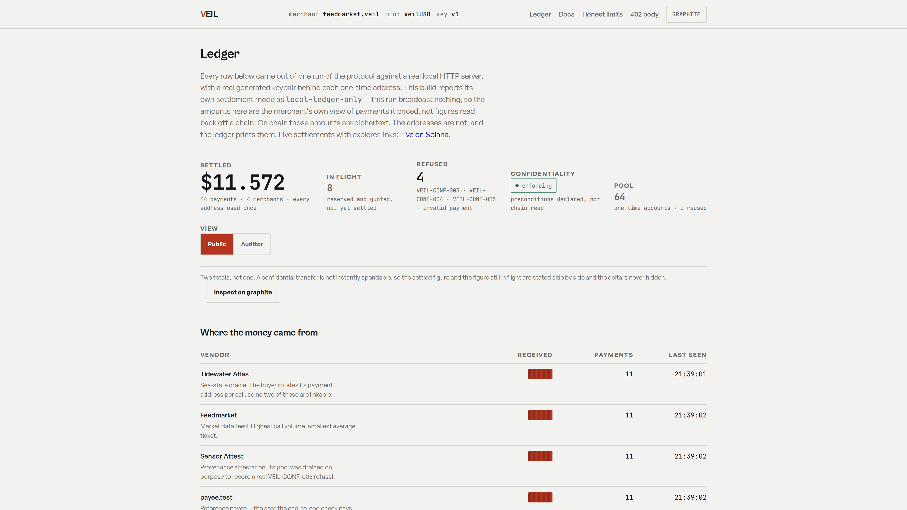

payments settled on x402 — TRM, via PYMNTS, 15 Sep 2026
$52.7M
value moved — the same measurement
$0.31
average ticket — TACEO, 12 May 2026
At thirty-one cents a call, your price list becomes public infrastructure.
what actually leaks
Not the balance. The business.
buyer
what each customer pays you
discount
whether you charge them differently
curve
your usage over time, per account
signal
which new client is ramping
revenue
your book, broken down by counterparty
Framing from TACEO’s x402 privacy analysis, 12 May 2026.
Veil · an x402 scheme, on Solana
The amount is ciphertext.
The chain does the checking.
A confidential transfer: ElGamal ciphertext plus zero-knowledge proofs — Token-2022,
instruction family 27, operation 7.
Solana’s own Token-2022 program verifies those proofs. No MPC cluster, no enclave,
no coprocessor in the trust path.
Every payment lands in a fresh one-time seat, so two payments never sit side by side
on the account graph.
scheme exact-confidential · scheme batch-settlement · one redemption per session

The merchant’s ledger after a real run. Amounts are readable only with the merchant’s
key — and the addresses stay public, so the dashboard prints them.
the proof is a command, not a promise
You don’t have to believe any of that.
$ npm run replay -- 2kmv4tYaDGWt2AdEE7…hYRr
PASS the transaction exists on chain → found
PASS the transaction succeeded → error null
PASS exactly one Token-2022 confidential transfer (family 27, op 7) → 1
PASS no plaintext Token-2022 transfer is present → none
PASS the amount is not a plaintext field of the instruction
→ 169 bytes of ciphertext + proofs (a plain transfer carries 9–10 bytes and a readable u64)
PASS no readable amount moved in public state → destination delta 0
PASS the destination is a one-time seat of this rail → slot 5, oracle.tide
VERDICT: every assertion held. exit 0
Verbatim from the run, against devnet. Read from the chain, not from our database —
anything the host cannot answer is reported as INFO, not as a pass.
the field, stated plainly
Others ship privacy for x402. This is the one a stranger can check.
MPC
amounts secret-shared 3-of-3 with an operator cluster — TACEO Merces, May 2026
TEE
proofs run inside an enclave today — PrivateX402, Feb 2026
FHE
a coprocessor computes on the ciphertext — Fhenix, Oct 2025
VEIL
the chain verifies it, and anyone re-runs the check in one command
Public for all four, ours included: the account addresses, the mint, and the timing.
That is the limit of this primitive, and it is on our limits page in the same words.
where it stands today
Live on devnet, with the receipts in the repo.
Confidential payments settled end to end, each with an explorer link in the README.
A hosted facilitator, an npm CLI, and an agent sandbox that any client can call today.
MIT licensed, zero paid infrastructure, built and verified by one developer on devnet.
npm run replay — the whole argument, in one command
x402 lets an agent pay for an API call with no account and no human — and makes every payment public.
Two hundred million payments settled on this rail, moving fifty-two million dollars. The average ticket: thirty-one cents. At thirty-one cents a call, your price list becomes public infrastructure.
What leaks isn't your balance. It's your business. What each customer pays you. Whether you charge them differently. Which new client is ramping. Your book, broken down by counterparty.
Veil is an x402 scheme on Solana. The amount is ciphertext, and the chain does the checking: ElGamal and zero-knowledge proofs, verified by Solana's own Token-2022 program.
This is the merchant's ledger after a real run. Amounts are readable only with the merchant's own key. The addresses stay public, so the dashboard prints them. That is the honest boundary of the primitive.
You don't have to believe any of that. The proof is a command, not a promise. Replay reads the chain, not our database, and asserts seven things: the transaction exists, it succeeded, and no readable amount moved.
Others ship privacy for x402: an MPC cluster, a TEE, an FHE coprocessor. Each asks you to trust an operator set. This one is verified by the chain.
Live on devnet, with every receipt in the repository. A hosted facilitator, an npm CLI, and an agent sandbox any client can call today.